ROS 2 Putting It All Together#
Learning Objectives#
이 예제에서는 다른 많은 ROS 2 및 Isaac Sim 튜토리얼에서 소개된 아이디어를 사용하여 로봇 URDF 정의에서 완전한 ROS 2 기반 로봇 시스템으로 전환합니다.
URDF 로봇 모델을 Isaac Sim으로 가져오기
로봇 모델에 물리 및 충돌 속성 통합
모델에 물리적으로 정확한 센서 부착
코드 또는 OmniGraph를 사용하여 로봇을 ROS 2 네트워크에 연결하는 publisher 및 subscriber 구축
로봇이 환경에서 이동할 수 있도록 내비게이션 스택 통합
이 튜토리얼은 로봇 모델로 Clearpath Robotics Dingo-D를 사용합니다. 이것은 실내 사용을 위한 차동 구동 로봇입니다.
Getting Started#
사전 준비사항
ROS 2를 사용할 수 있고, ROS 2 extension이 활성화되어 있으며, 필요한 환경 변수가 설정되도록 ROS 2 Installation (Default)을 완료하세요.
Window > Extensions으로 이동하여 Extension Manager 창에서
isaacsim.ros2.bridgeExtension을 활성화합니다.IsaacSim-ros_workspaces 저장소를 클론하고 workspace를 소스했어야 합니다.
Warning
이 튜토리얼은 PhysX SDK 백엔드만 지원합니다; 이 에셋이 음수 스케일 메시를 사용하기 때문에 Newton은 지원되지 않습니다. Newton asset compatibility를 참조하세요.
Importing the URDF#
로봇을 Isaac Sim으로 가져오려면 URDF Importer Extension을 사용합니다. 이를 위해 먼저 URDF를 생성한 다음 /robot_description 토픽에 발행합니다.
Generate the Robot Description#
ROS가 소스된 터미널에서 Clearpath Robotics 패키지와 기타 필요한 의존성을 설치합니다.
sudo apt install ros-$ROS_DISTRO-clearpath-common ros-$ROS_DISTRO-xacro
이 튜토리얼의 모든 Windows 명령은 PowerShell 구문을 사용합니다. ROS 2 workspace가 소스된 PowerShell 터미널에서 실행하세요.
이 패키지들은 소스된 ROS 2 workspace에 포함되어 있어 추가 설치 단계가 필요하지 않습니다.
isaacsim_clearpath_nav2패키지의 params 디렉터리를 가리키는 편의 변수를 설정합니다. 생성된 모든 파일이 여기에 저장됩니다. 모든 Clearpath 로봇 구성이 작동합니다; 이 튜토리얼은 Dingo-D (dd100)를 사용합니다.export ROBOT_PARAMS=$(ros2 pkg prefix isaacsim_clearpath_nav2)/share/isaacsim_clearpath_nav2/params/dd100
$env:ROBOT_PARAMS = "$(ros2 pkg prefix isaacsim_clearpath_nav2)\share\isaacsim_clearpath_nav2\params\dd100"
샘플 Dingo-D 구성을
robot.yaml로 복사합니다.cp $(ros2 pkg prefix clearpath_config)/share/clearpath_config/sample/dd100_default.yaml $ROBOT_PARAMS/robot.yaml
Copy-Item "$(ros2 pkg prefix clearpath_config)\share\clearpath_config\sample\dd100_default.yaml" ` "$env:ROBOT_PARAMS\robot.yaml"
Clearpath generator로 로봇 설명을 생성합니다.
ros2 run clearpath_generator_common generate_description -s $ROBOT_PARAMS
python "$(ros2 pkg prefix clearpath_generator_common)\lib\clearpath_generator_common\generate_description" -s $env:ROBOT_PARAMS
/robot_description토픽에 URDF를 발행하는 로봇 설명 노드를 실행합니다. 이 터미널을 열어두세요.ros2 launch clearpath_platform_description description.launch.py -- setup_path:=$ROBOT_PARAMS
ros2 launch clearpath_platform_description description.launch.py -- setup_path:=$env:ROBOT_PARAMS
Full copy-paste command
export ROBOT_PARAMS=$(ros2 pkg prefix isaacsim_clearpath_nav2)/share/isaacsim_clearpath_nav2/params/dd100
cp /opt/ros/$ROS_DISTRO/share/clearpath_config/sample/dd100_default.yaml $ROBOT_PARAMS/robot.yaml
ros2 run clearpath_generator_common generate_description -s $ROBOT_PARAMS
ros2 launch clearpath_platform_description description.launch.py -- setup_path:=$ROBOT_PARAMS
$env:ROBOT_PARAMS = "$(ros2 pkg prefix isaacsim_clearpath_nav2)\share\isaacsim_clearpath_nav2\params\dd100"
Copy-Item "$(ros2 pkg prefix clearpath_config)\share\clearpath_config\sample\dd100_default.yaml" `
"$env:ROBOT_PARAMS\robot.yaml"
python "$(ros2 pkg prefix clearpath_generator_common)\lib\clearpath_generator_common\generate_description" -s $env:ROBOT_PARAMS
ros2 launch clearpath_platform_description description.launch.py -- setup_path:=$env:ROBOT_PARAMS
Import into Isaac Sim#
URDF Importer Extension을 사용하여 이전 단계에서 생성한 실행 중인 로봇 설명 노드에서 직접 로봇 설명을 가져옵니다.
IsaacSim-ros_workspaces 빌드가 소스된 터미널에서 Isaac Sim을 실행합니다.
Window > Extensions으로 이동하여 Extension Manager 창에서
isaacsim.ros2.urdfextension을 설치하고 활성화합니다.File > Import from ROS2 URDF Node로 이동합니다.
ROS 2 Node 텍스트 박스에
robot_state_publisher를 입력하고 Find Node를 클릭합니다. 성공하면 "ROS package paths resolved"라고 표시됩니다.Import를 클릭하여 로봇 설명을 가져옵니다.
기본 prim을
dd100으로 이름을 변경합니다.SHIFT+CTRL+S로 stage를dd100.usd로 저장합니다.
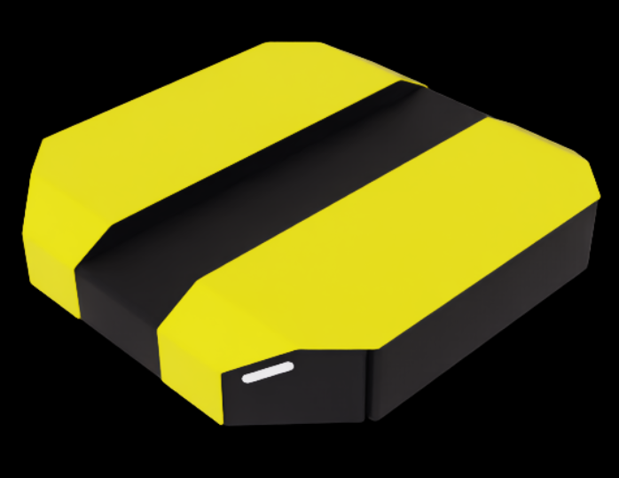
Adjust Model Physics#
기본적으로 가져온 URDF 모델에는 수정해야 할 몇 가지 이상한 점이 있습니다.
비물리적 조인트를 비활성화합니다. URDF와 결과적으로 USD에는 불필요한 조인트가 있습니다.
front_left_wheel_joint,front_right_wheel_joint,rear_caster_joint를 제외한 모든 조인트를 비활성화합니다. Stage Tree에서 CTRL+LMB로 각 조인트를 클릭하고 Physics 아래의 Joint Enabled를 선택 해제하면 됩니다.front_left_wheel_joint와front_right_wheel_joint의 Damping을10000으로 업데이트합니다. 이를 통해 로봇의 속도 제어가 가능합니다. 각 조인트의 Property 탭에서 Physics > Drive 아래에서 Damping을 찾을 수 있습니다.더 정확한 마찰 계수를 추가합니다. 이 로봇은 차동 구동 봇이므로 후면 캐스터는 자유롭게 미끄러져야 하고 구동 바퀴는 좋은 견인력이 필요합니다.
/dd100/Materials아래에 두 개의 물리 재질을 생성합니다: Dynamic Friction과 Static Friction이0.0으로 설정된CasterMaterial과, 둘 다1.0으로 설정된WheelMaterial. Create > Physics > Physics Material을 클릭하고 Rigid Body Material을 선택하여 새 재질을 생성할 수 있습니다.rear_caster에CasterMaterial을,front_left_wheel_link와front_right_wheel_link에WheelMaterial을 할당합니다. 검색 바를 사용하여 이 prim을 찾은 다음 Materials on selected models 드롭다운을 통해 재질을 적용할 수 있습니다.
Create > Xform을 클릭하여 빈 Xform을 생성하고
/dd100/Geometry/base_link/chassis_link로 이동한 다음base_link로 이름 지정합니다. 이것은 ROS에서 로봇의 기본 변환을 나타내는 데 사용됩니다.
stage를 저장했는지 확인합니다.
Test the URDF in Isaac Sim#
가져오기를 확인하려면 간단한 환경을 구성하고 로봇을 추가합니다.
CTRL+N으로 새 stage를 생성합니다.Create > Environments > Flat Grid에서 기존 환경을 추가합니다.
Content browser에서 이전 단계에서 생성한 USD 파일을 stage로 드래그합니다.
로봇을 원점에 배치하기 위해 Transform의 Translate 컴포넌트를 0으로 설정합니다. Transform이 없으면 Add Transforms를 클릭합니다.
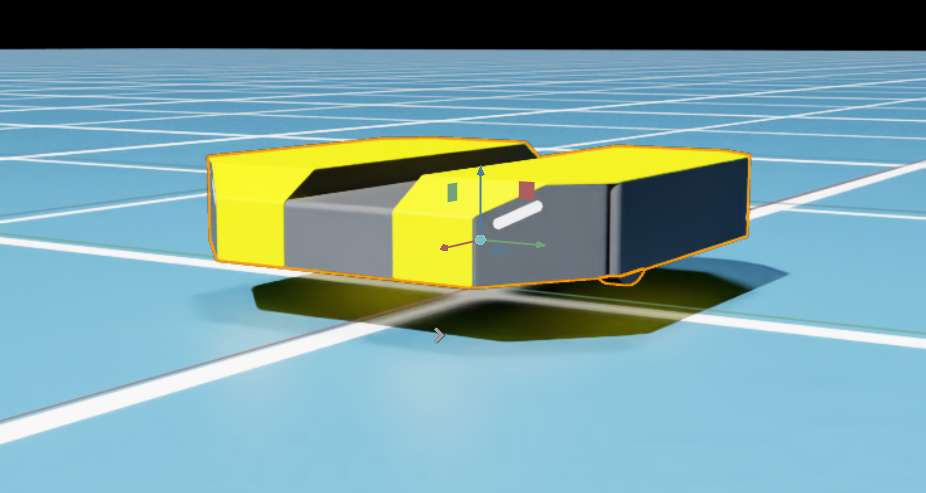
빠른 테스트로, 두 바퀴 조인트 모두에 Target Velocity를 100으로 설정합니다. front_left_wheel_joint와 front_right_wheel_joint 조인트의 Property 탭에서 Physics > Drive 아래에서 Target Velocity를 찾을 수 있습니다.
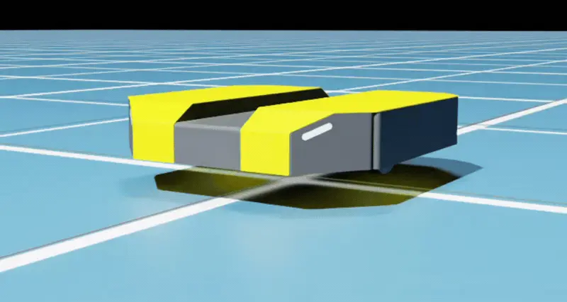
바퀴 조인트 Target Velocity가 적용된 후 앞으로 이동하는 Dingo-D.#
Adding Sensors#
로봇이 환경을 인식할 수 있도록 몇 가지 센서를 생성합니다.
File > Open을 사용하거나 Content browser에서 더블 클릭하여 이전에 생성한 로봇 USD를 엽니다.
stage를
dd100_with_sensors.usd로 저장합니다.일반적인 시판 카메라인 RealSense D455를 추가하는 것으로 시작합니다.
Create > Sensors > Camera and Depth Sensors > RealSense > Realsense D455를 클릭하여 센서를 생성합니다.
센서를
/dd100/Geometry/base_link/chassis_link로 드래그하고sim_camera로 이름을 변경합니다.섀시 앞쪽에 배치하기 위해 Translate 컴포넌트를
(0.3, 0, 0.05)로 설정합니다.기본적으로 RealSense는 중력의 영향을 받는 Rigid Body입니다. 로봇에 고정하려면
/dd100/Geometry/base_link/chassis_link/sim_camera/RSD455를 클릭하고 Property 탭의 Physics 아래에서 Rigid Body Enabled를 선택 해제합니다.
다음으로 LiDAR를 추가합니다.
Create > Sensors > RTX Lidar > SICK > microScan3를 클릭하여 센서를 생성합니다.
센서를
/dd100/Geometry/base_link/chassis_link로 드래그하고sim_lidar로 이름을 변경합니다.섀시 위에 배치하기 위해 Translate 컴포넌트를
(0.0, 0.0, 0.15)로 설정합니다.
stage를 저장합니다.
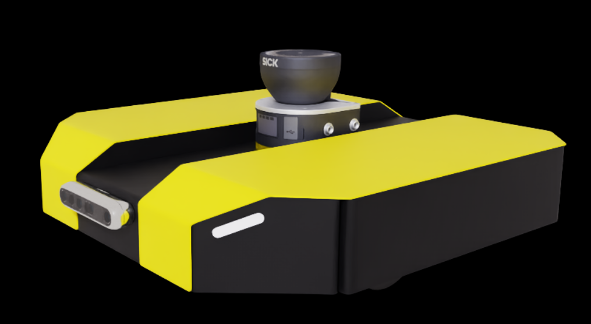
센서가 부착된 DD100: 앞면의 RealSense D455 depth 카메라와 상단의 SICK LiDAR.#
다음으로 로봇을 시각적으로 흥미로운 환경에 배치합니다.
CTRL+N으로 새 stage를 생성합니다.Content browser에서 Isaac Sim > Environments > Simple_Warehouse > warehouse.usd의 창고 환경을 드래그합니다.
Translate 컴포넌트를 0으로 설정합니다.
dd100_with_sensors.usdUSD 파일을 stage로 드래그합니다.Translate 컴포넌트를
(-5.0, 10.0, 0.0)으로, Orient 컴포넌트를(0.0, 0.0, 135.0)으로 설정합니다.로봇이 보는 것을 보려면 Window > Viewports > Viewport 2를 클릭하여 추가 뷰포트를 생성합니다.
두 번째 뷰포트에서 왼쪽 상단의 Perspective를 클릭하고 Cameras > Camera_OmniVision_OV9782_Color를 선택하여 카메라를 변경합니다.
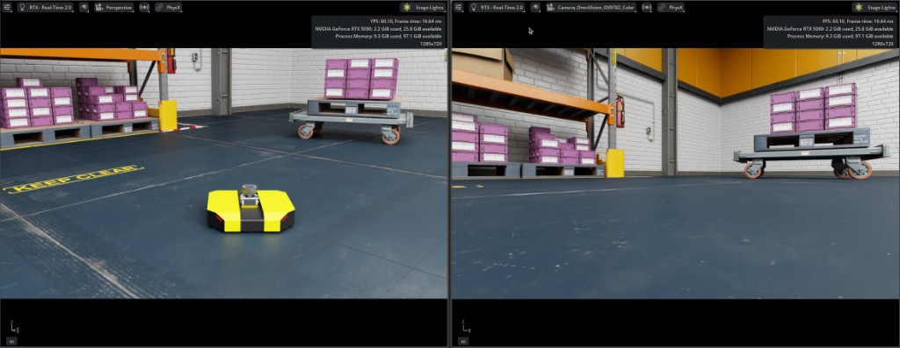
Simple Warehouse의 DD100: Viewport 1의 원근 보기 (왼쪽)와 Viewport 2의 Camera_OmniVision_OV9782_Color 센서 보기 (오른쪽).#
ROS 2 Integration#
이제 로봇에 센서가 있으므로 유용한 작업을 수행하도록 제어할 수 있습니다. 목표는 복잡한 창고에서 두 지점 사이에서 로봇을 제어하는 ROS 2 스택을 개발하는 것입니다. 이를 위해 다음이 필요합니다:
창고 환경 설정
창고의 점유 지도 생성
로봇과 ROS 2 기반 제어 스택 (구체적으로 Nav2) 사이의 인터페이스 구축
시나리오에서 두 지점 사이에서 로봇을 제어
Building OmniGraph Nodes#
Note
Isaac Sim 내에서 Nav2 스택에 직접 발행하고 구독하는 데 필요한 Python 노드를 생성하는 rclpy 코드를 작성할 수 있습니다. 그러나 예시를 위해 이 튜토리얼은 ROS 2 OmniGraph 노드를 사용하여 필요한 ROS 노드를 구축합니다.
Nav2에는 다음 토픽에 대한 발행과 구독이 필요합니다 (정확한 토픽 이름은 Nav2 구성에 따라 다릅니다):
발행
ROS 2 Topic
ROS 2 Message Type
/platform/joint_statessensor_msgs/JointState
/tf및/tf_statictf2_msgs/TFMessage
/odomnav_msgs/Odometry
/scansensor_msgs/LaserScan
/clockrosgraph_msgs/Clock
구독
ROS 2 Topic
ROS 2 Message Type
/cmd_velgeometry_msgs/Twist
각 토픽 시스템에 대해 별도의 ActionGraph를 생성합니다:
dd100_with_sensors.usd파일을 엽니다.이 튜토리얼에서는 로봇에 세 개의 ActionGraph만 생성합니다:
joint_statesscancmd_vel
clock그래프는 나중에 더 큰 씬에 추가됩니다.odom은joint_statesActionGraph에 포함되며tf는 별도로 실행하는 외부robot_state_publisher가 계산합니다.다음 경로에 ActionGraph를 배치합니다:
ActionGraph Name
Path
joint_states/dd100/Geometry/base_link/chassis_link/joint_statesscan/dd100/Geometry/base_link/chassis_link/sim_lidar/scancmd_vel/dd100/Geometry/base_link/chassis_link/cmd_vel
ROS2 RTX Lidar Helper를 사용하여 LaserScan 데이터를 발행합니다.
On Playback Tick 노드를 생성하고
Tick을 Isaac Run One Simulation Frame 노드에 연결합니다.Isaac Run One Simulation Frame의 출력을 Isaac Create Render Product 노드에 연결합니다. 이전에 생성한 센서의
.../sim_lidar/Lidarprim으로cameraPrim속성을 설정합니다.ROS2 RTX Lidar Helper 노드를 생성합니다.
frameId를sim_lidar로,topicName을scan으로,type을laser_scan으로 설정합니다.Isaac Create Render Product의 출력을 ROS2 RTX Lidar Helper의 입력에 연결합니다.
ROS2 Context 노드를 생성하고 ROS2 RTX Lidar Helper 노드에 연결합니다.
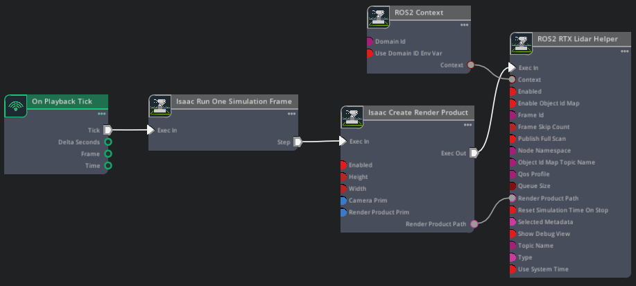
Script Editor Code
import omni.graph.core as og
import omni.usd
from pxr import Sdf
ROBOT_PRIM = "/dd100"
CHASSIS_LINK = f"{ROBOT_PRIM}/Geometry/base_link/chassis_link"
LIDAR_SENSOR_PRIM = f"{CHASSIS_LINK}/sim_lidar/Lidar"
GRAPH_PATH = f"{CHASSIS_LINK}/sim_lidar/scan"
stage = omni.usd.get_context().get_stage()
if stage.GetPrimAtPath(GRAPH_PATH):
stage.RemovePrim(GRAPH_PATH)
keys = og.Controller.Keys
og.Controller.edit(
{"graph_path": GRAPH_PATH, "evaluator_name": "execution"},
{
keys.CREATE_NODES: [
("OnPlaybackTick", "omni.graph.action.OnPlaybackTick"),
("RunOneFrame", "isaacsim.core.nodes.OgnIsaacRunOneSimulationFrame"),
("CreateRenderProduct", "isaacsim.core.nodes.IsaacCreateRenderProduct"),
("Context", "isaacsim.ros2.bridge.ROS2Context"),
("LidarHelper", "isaacsim.ros2.bridge.ROS2RtxLidarHelper"),
],
keys.SET_VALUES: [
("CreateRenderProduct.inputs:cameraPrim", [Sdf.Path(LIDAR_SENSOR_PRIM)]),
("LidarHelper.inputs:topicName", "scan"),
("LidarHelper.inputs:type", "laser_scan"),
("LidarHelper.inputs:frameId", "sim_lidar"),
],
keys.CONNECT: [
("OnPlaybackTick.outputs:tick", "RunOneFrame.inputs:execIn"),
("RunOneFrame.outputs:step", "CreateRenderProduct.inputs:execIn"),
("CreateRenderProduct.outputs:execOut", "LidarHelper.inputs:execIn"),
("CreateRenderProduct.outputs:renderProductPath", "LidarHelper.inputs:renderProductPath"),
("Context.outputs:context", "LidarHelper.inputs:context"),
],
},
)
이 ActionGraph는 joint state 및 odometry 데이터를 발행하고, odom → base_link 변환을 브로드캐스트하며, sim_lidar 센서 프레임에 대한 정적 변환을 발행합니다.
On Playback Tick 노드를 생성합니다.
ROS2 Publish Joint State 노드를 생성합니다.
targetPrim을/dd100/Geometry/base_link/chassis_link로,topicName을platform/joint_states로 설정합니다.Isaac Compute Odometry Node를 생성하고
chassisPrim을/dd100/Geometry/base_link/chassis_link로 설정합니다.ROS2 Publish Odometry 노드를 생성하고
topicName과odomFrameId를odom으로 설정합니다.ROS2 Publish Raw Transform Tree 노드를 생성하고
childFrameId를base_link로,parentFrameId를odom으로 설정합니다.Isaac Compute Transform Tree 노드를 생성합니다.
parentPrim을/dd100/Geometry/base_link/chassis_link로,targetPrims를/dd100/Geometry/base_link/chassis_link/sim_lidar로 설정합니다.ROS2 Publish Transform Tree 노드를 생성합니다.
topicName을tf_static으로 설정하고staticPublisher를 활성화합니다. Isaac Compute Transform Tree의 출력 (childFrames,orientations,parentFrames,translations)을 ROS2 Publish Transform Tree의 해당 입력에 연결합니다. 이렇게 하면 Nav2가 LiDAR 데이터를 사용할 수 있도록base_link에서sim_lidar까지의 정적 변환이 발행됩니다.Isaac Compute Odometry Node의 각 일치하는 출력을 ROS2 Publish Odometry와 ROS2 Publish Raw Transform Tree의 해당 입력에 연결합니다.
Isaac Read Simulation Time과 ROS2 Context 노드를 생성하고 다른 각 노드에 연결합니다.
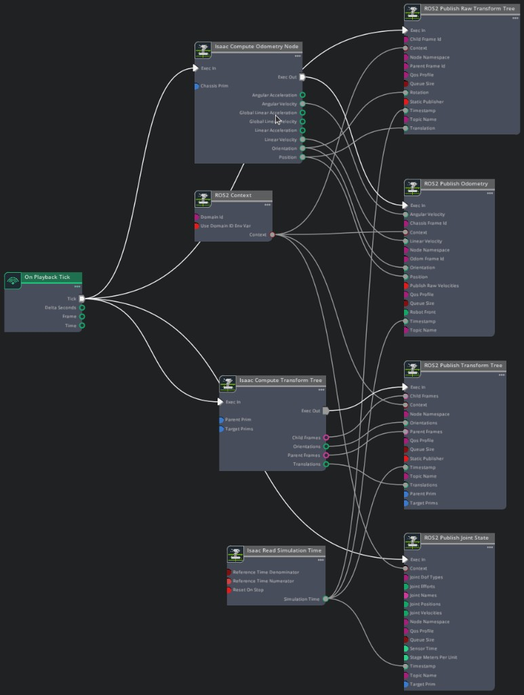
Script Editor Code
import omni.graph.core as og
import omni.usd
from pxr import Sdf
ROBOT_PRIM = "/dd100"
CHASSIS_LINK = f"{ROBOT_PRIM}/Geometry/base_link/chassis_link"
SIM_LIDAR = f"{CHASSIS_LINK}/sim_lidar"
GRAPH_PATH = f"{CHASSIS_LINK}/joint_states"
stage = omni.usd.get_context().get_stage()
if stage.GetPrimAtPath(GRAPH_PATH):
stage.RemovePrim(GRAPH_PATH)
keys = og.Controller.Keys
og.Controller.edit(
{"graph_path": GRAPH_PATH, "evaluator_name": "execution"},
{
keys.CREATE_NODES: [
("OnPlaybackTick", "omni.graph.action.OnPlaybackTick"),
("ReadSimTime", "isaacsim.core.nodes.IsaacReadSimulationTime"),
("Context", "isaacsim.ros2.bridge.ROS2Context"),
("PublishJointState", "isaacsim.ros2.bridge.ROS2PublishJointState"),
("ComputeOdom", "isaacsim.core.nodes.IsaacComputeOdometry"),
("PublishOdom", "isaacsim.ros2.bridge.ROS2PublishOdometry"),
("PublishRawTF", "isaacsim.ros2.bridge.ROS2PublishRawTransformTree"),
("ComputeTransformTree", "isaacsim.core.nodes.IsaacComputeTransformTree"),
("PublishTF", "isaacsim.ros2.bridge.ROS2PublishTransformTree"),
],
keys.SET_VALUES: [
("PublishJointState.inputs:targetPrim", [Sdf.Path(CHASSIS_LINK)]),
("PublishJointState.inputs:topicName", "platform/joint_states"),
("ComputeOdom.inputs:chassisPrim", [Sdf.Path(CHASSIS_LINK)]),
("PublishOdom.inputs:topicName", "odom"),
("PublishOdom.inputs:odomFrameId", "odom"),
("PublishRawTF.inputs:childFrameId", "base_link"),
("PublishRawTF.inputs:parentFrameId", "odom"),
("ComputeTransformTree.inputs:parentPrim", Sdf.Path(CHASSIS_LINK)),
("ComputeTransformTree.inputs:targetPrims", [Sdf.Path(SIM_LIDAR)]),
("PublishTF.inputs:topicName", "tf_static"),
("PublishTF.inputs:staticPublisher", True),
],
keys.CONNECT: [
("OnPlaybackTick.outputs:tick", "PublishJointState.inputs:execIn"),
("ReadSimTime.outputs:simulationTime", "PublishJointState.inputs:timeStamp"),
("OnPlaybackTick.outputs:tick", "ComputeOdom.inputs:execIn"),
("ComputeOdom.outputs:execOut", "PublishOdom.inputs:execIn"),
("ComputeOdom.outputs:angularVelocity", "PublishOdom.inputs:angularVelocity"),
("ComputeOdom.outputs:linearVelocity", "PublishOdom.inputs:linearVelocity"),
("ComputeOdom.outputs:orientation", "PublishOdom.inputs:orientation"),
("ComputeOdom.outputs:position", "PublishOdom.inputs:position"),
("ReadSimTime.outputs:simulationTime", "PublishOdom.inputs:timeStamp"),
("OnPlaybackTick.outputs:tick", "PublishRawTF.inputs:execIn"),
("ComputeOdom.outputs:orientation", "PublishRawTF.inputs:rotation"),
("ComputeOdom.outputs:position", "PublishRawTF.inputs:translation"),
("ReadSimTime.outputs:simulationTime", "PublishRawTF.inputs:timeStamp"),
("OnPlaybackTick.outputs:tick", "ComputeTransformTree.inputs:execIn"),
("ComputeTransformTree.outputs:execOut", "PublishTF.inputs:execIn"),
("ComputeTransformTree.outputs:childFrames", "PublishTF.inputs:childFrames"),
("ComputeTransformTree.outputs:orientations", "PublishTF.inputs:orientations"),
("ComputeTransformTree.outputs:parentFrames", "PublishTF.inputs:parentFrames"),
("ComputeTransformTree.outputs:translations", "PublishTF.inputs:translations"),
("ReadSimTime.outputs:simulationTime", "PublishTF.inputs:timeStamp"),
("Context.outputs:context", "PublishJointState.inputs:context"),
("Context.outputs:context", "PublishOdom.inputs:context"),
("Context.outputs:context", "PublishRawTF.inputs:context"),
("Context.outputs:context", "PublishTF.inputs:context"),
],
},
)
이 ActionGraph는 cmd_vel 토픽을 구독하고 로봇의 바퀴를 구동합니다.
On Playback Tick 노드를 생성합니다.
ROS2 Subscribe Twist 노드를 생성하고
topicName을cmd_vel로 설정합니다.로봇이 평탄하고 전진 속도와 yaw만 필요하므로, 두 개의 Break 3-Vector 노드를 사용하여 선속도의
X컴포넌트와 각속도의Z컴포넌트를 추출합니다.다음 속성으로 Differential Controller 노드를 생성합니다:
Field
Value
Max Angular Speed
1.0
Max Linear Speed
1.3
Wheel Distance
0.45
Wheel Radius
0.1
Articulation Controller 노드를 생성합니다. jointNames를
front_left_wheel_joint와front_right_wheel_joint로, targetPrim을/dd100으로 설정합니다.ROS2 Context 노드를 생성하고 ROS2 Subscribe Twist 노드에 연결합니다.
파이프라인을 연결합니다: ROS2 Subscribe Twist 출력이 Break 3-Vector 노드를 통해 Differential Controller로, 그 다음 Articulation Controller로 이어집니다.
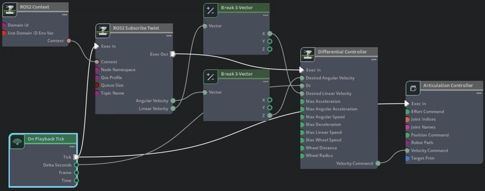
Script Editor Code
import omni.graph.core as og
import omni.usd
from pxr import Sdf
ROBOT_PRIM = "/dd100"
CHASSIS_LINK = f"{ROBOT_PRIM}/Geometry/base_link/chassis_link"
GRAPH_PATH = f"{CHASSIS_LINK}/cmd_vel"
stage = omni.usd.get_context().get_stage()
if stage.GetPrimAtPath(GRAPH_PATH):
stage.RemovePrim(GRAPH_PATH)
keys = og.Controller.Keys
og.Controller.edit(
{"graph_path": GRAPH_PATH, "evaluator_name": "execution"},
{
keys.CREATE_NODES: [
("OnPlaybackTick", "omni.graph.action.OnPlaybackTick"),
("Context", "isaacsim.ros2.bridge.ROS2Context"),
("SubscribeTwist", "isaacsim.ros2.bridge.ROS2SubscribeTwist"),
("BreakLinVel", "omni.graph.nodes.BreakVector3"),
("BreakAngVel", "omni.graph.nodes.BreakVector3"),
("DiffController", "isaacsim.robot.wheeled_robots.DifferentialController"),
("ArtController", "isaacsim.core.nodes.IsaacArticulationController"),
],
keys.SET_VALUES: [
("SubscribeTwist.inputs:topicName", "cmd_vel"),
("DiffController.inputs:maxAngularSpeed", 1.0),
("DiffController.inputs:maxLinearSpeed", 1.3),
("DiffController.inputs:wheelDistance", 0.45),
("DiffController.inputs:wheelRadius", 0.1),
("ArtController.inputs:jointNames", ["front_left_wheel_joint", "front_right_wheel_joint"]),
("ArtController.inputs:targetPrim", [Sdf.Path(ROBOT_PRIM)]),
],
keys.CONNECT: [
("OnPlaybackTick.outputs:tick", "SubscribeTwist.inputs:execIn"),
("OnPlaybackTick.outputs:deltaSeconds", "DiffController.inputs:dt"),
("SubscribeTwist.outputs:execOut", "DiffController.inputs:execIn"),
("SubscribeTwist.outputs:linearVelocity", "BreakLinVel.inputs:tuple"),
("BreakLinVel.outputs:x", "DiffController.inputs:linearVelocity"),
("SubscribeTwist.outputs:angularVelocity", "BreakAngVel.inputs:tuple"),
("BreakAngVel.outputs:z", "DiffController.inputs:angularVelocity"),
("DiffController.outputs:velocityCommand", "ArtController.inputs:velocityCommand"),
("OnPlaybackTick.outputs:tick", "ArtController.inputs:execIn"),
("Context.outputs:context", "SubscribeTwist.inputs:context"),
],
},
)
ActionGraph가 생성되면, ROS 2가 소스된 터미널에서 예상 데이터가 ROS 2 토픽에 나타나는지 확인할 수 있습니다:
Isaac Sim에서 Play를 선택합니다.
다음 토픽들이 수신되는지 확인합니다:
ros2 topic list
예상 출력:
/cmd_vel /platform/joint_states /odom /parameter_events /rosout /scan /tf /tf_static
전체 TF 트리를 시각화하려면:
Generate the Robot Description 단계의 로봇 설명 launch 파일이 아직 실행 중인지 확인합니다. 닫혀 있으면 다시 실행합니다:
ros2 launch clearpath_platform_description description.launch.py -- setup_path:=$ROBOT_PARAMS
ros2 launch clearpath_platform_description description.launch.py -- setup_path:=$env:ROBOT_PARAMS
tf2_tools패키지의view_frames를 사용하여 TF 트리 PDF를 생성합니다.ros2 run tf2_tools view_frames
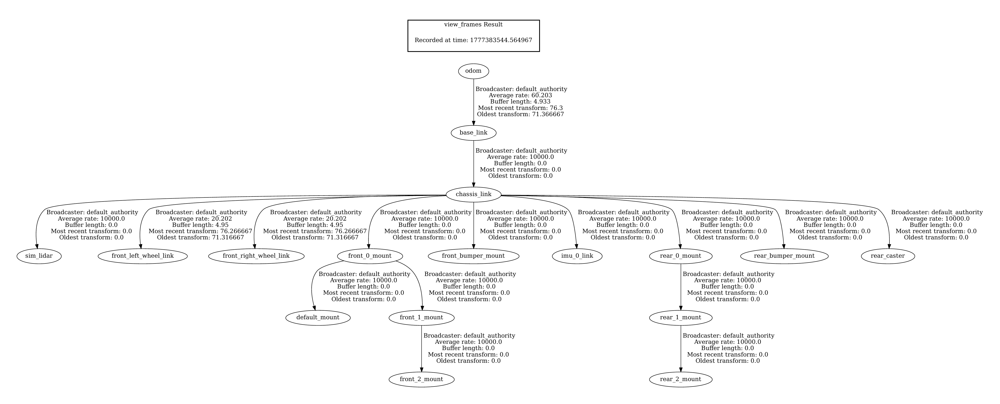
TF 트리 PDF가 생성되면 로봇 설명 launch 터미널을 닫을 수 있습니다.
cmd_vel ActionGraph가 제대로 작동하는지 확인하는 테스트를 실행하려면:
Create > Physics > Ground Plane을 클릭하여 지면 평면을 추가하고 Play를 클릭합니다.
ROS 2가 소스된 터미널에서
/cmd_vel토픽에 twist 메시지를 발행합니다 (아래 참조).로봇이 환경에서 이동하는지 확인합니다.
ros2 topic pub /cmd_vel geometry_msgs/Twist "{'linear': {'x': 1, 'y': 0.0, 'z': 0.0}, 'angular': {'x': 0.0, 'y': 0.0, 'z': 1.0}}" --once
로봇이 이동하는지 확인한 후 stage를 저장합니다. 저장 전에 지면 평면을 삭제하거나 기본 prim 밖으로 이동할 수 있습니다.
Add Automatic Namespace Attributes#
isaac:namespace 속성을 추가하면 토픽 이름이 설명적이 되고 여러 로봇이 씬을 공유할 때 깔끔하게 확장됩니다. 자세한 내용은 Automatic ROS 2 Namespace Generation 튜토리얼을 참조하세요.
아래 표에 나열된 각 prim에 대해 isaac:namespace 속성을 추가합니다:
prim을 선택합니다.
Property 패널에서 Add를 클릭합니다.
Isaac > Namespace로 이동합니다.
값을 표의 해당 Namespace Value로 설정합니다.
Prim |
Namespace Value |
|---|---|
|
|
|
|
|
|
이제 Play를 선택한 후 다음을 실행합니다:
ros2 topic list
네임스페이스가 지정된 토픽의 예상 출력:
/dd100_0000/cmd_vel
/dd100_0000/platform/joint_states
/dd100_0000/odom
/dd100_0000/sim_lidar/scan
/dd100_0000/tf
/dd100_0000/tf_static
/parameter_events
/rosout
stage를 저장합니다.
Simulation Scene#
더 큰 창고 환경을 로드하는 것으로 시작합니다.
CTRL+N으로 새 stage를 생성합니다.Content browser에서 Isaac Sim > Environments > Simple_Warehouse > full_warehouse.usd의 창고 환경을 드래그합니다.
Translate 컴포넌트를 0으로 설정합니다.
dd100_with_sensors.usdUSD 파일을 stage로 드래그합니다.Translate 컴포넌트를
(-3.0, 6.0, 0.025)로, Orient 컴포넌트를(0.0, 0.0, 90.0)으로 설정합니다.
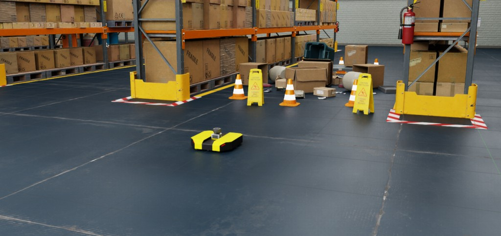
다음으로, clock ActionGraph를 추가합니다. 여러 로봇을 추가해도 중복 clock 메시지가 발행되지 않도록 이것은 로봇에 직접 추가하는 것이 아니라 최종 씬에 추가되어야 합니다.
stage를 우클릭하고 Create > Action Graph를 선택하여 새 ActionGraph를 생성합니다.
clock으로 이름을 변경합니다.다음 노드를 추가합니다: On Playback Tick, ROS2 Context, Isaac Read Simulation Time, ROS2 Publish Clock.
아래와 같이 연결합니다.
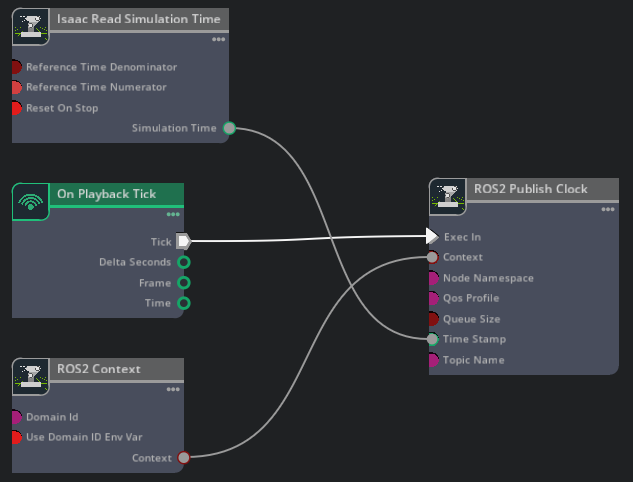
Script Editor Code
import omni.graph.core as og import omni.usd GRAPH_PATH = "/World/clock" stage = omni.usd.get_context().get_stage() if stage.GetPrimAtPath(GRAPH_PATH): stage.RemovePrim(GRAPH_PATH) keys = og.Controller.Keys og.Controller.edit( {"graph_path": GRAPH_PATH, "evaluator_name": "execution"}, { keys.CREATE_NODES: [ ("OnPlaybackTick", "omni.graph.action.OnPlaybackTick"), ("Context", "isaacsim.ros2.bridge.ROS2Context"), ("ReadSimTime", "isaacsim.core.nodes.IsaacReadSimulationTime"), ("PublishClock", "isaacsim.ros2.bridge.ROS2PublishClock"), ], keys.CONNECT: [ ("OnPlaybackTick.outputs:tick", "PublishClock.inputs:execIn"), ("ReadSimTime.outputs:simulationTime", "PublishClock.inputs:timeStamp"), ("Context.outputs:context", "PublishClock.inputs:context"), ], }, )
stage를
dd100_warehouse_navigation.usd로 저장합니다.
Occupancy Map#
Nav2는 충돌 없는 경로를 계획하기 위해 환경의 점유 지도가 필요합니다. Occupancy Map Generator extension을 사용하여 생성합니다. 스크린샷이 있는 더 자세한 안내는 Occupancy Map section of the ROS 2 Navigation tutorial을 참조하세요.
Top 카메라 보기로 전환합니다 (뷰포트 왼쪽 상단의 Camera 드롭다운 > Top).
Tools > Robotics > Occupancy Map을 엽니다.
원점을
(0.0, 0.0, 0.0)으로 설정합니다. Lower Bound Z를0.2로, Upper Bound Z를0.62로 설정합니다.Stage Tree에서 창고 루트 prim을 선택한 다음 Occupancy Map extension의 BOUND SELECTION을 클릭하여 지도 경계를 자동으로 맞춥니다.
CALCULATE를 클릭한 다음 VISUALIZE IMAGE를 클릭합니다.
Save YAML을 클릭하고
dd100_warehouse_navigation.yaml로 저장합니다.Save Image를 클릭하고 YAML 파일과 동일한 디렉터리에
dd100_warehouse_navigation.png로 저장합니다.
생성된 점유 지도는 다음과 유사해야 합니다:
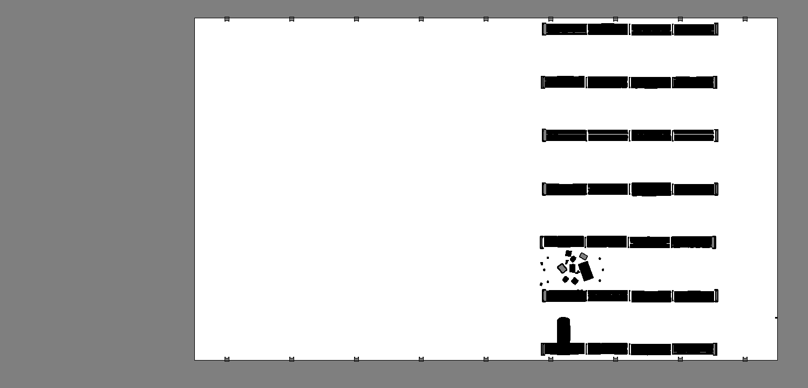
전체 창고 환경에서 생성된 점유 지도. Lower Bound Z를 0.2 (로봇 위)로 설정했기 때문에 로봇이 보이지 않습니다.#
Running Nav2#
Nav2 스택을 사용하여 로봇을 제어합니다. Nav2는 모바일 로봇을 위한 ROS 2 기반 내비게이션 스택입니다. 내비게이션 시스템 구축 및 실행을 위한 도구와 라이브러리 세트를 제공합니다.
Isaac Sim에서 Play를 클릭합니다.
ROS가 소스된 터미널에서 전체 내비게이션 스택을 실행합니다. 이것은 단일 명령으로
robot_state_publisher, Nav2, RViz를 시작합니다. Nav2 파라미터는isaacsim_clearpath_nav2패키지에 미리 구성되어 있습니다.ros2 launch isaacsim_clearpath_nav2 clearpath_navigation.launch.py \ map:=/path/to/dd100_warehouse_navigation.yaml \ namespace:=dd100_0000
ros2 launch isaacsim_clearpath_nav2 clearpath_navigation.launch.py ` map:=C:\path\to\dd100_warehouse_navigation.yaml ` namespace:=dd100_0000
rviz가 열리면, 창 상단의 2D Pose Estimate 버튼을 클릭하고 지도에서 로봇의 현재 위치에 포즈 추정값을 클릭하여 배치하여 로봇의 초기 포즈를 설정합니다.Adaptive Monte Carlo Localization (AMCL)이 로봇의 위치를 파악한 후, Nav2 Goal 버튼을 사용하여 내비게이션 목표를 전송합니다. 목표를 통로의 장비 위에 배치합니다.

RViz에서 초기 포즈 추정값과 Nav2 목표를 설정한 후 Isaac Sim에서 로봇이 목표를 향해 이동하는 것을 관찰합니다.#
로봇에 LiDAR가 있고 Nav2가 장애물이 나타날 때 경로를 능동적으로 재계산하기 때문에, 환경을 통해 로봇과 상호작용할 수 있습니다.

환경 교란에 기반한 대화형 로봇 반응.#
Summary#
이 튜토리얼에서 수행한 작업:
URDF Importer Extension을 사용하여 Clearpath Dingo-D URDF 로봇 모델을 Isaac Sim으로 가져왔습니다.
구동 바퀴와 캐스터의 조인트 감쇠 및 물리 재질을 포함하여 물리 및 충돌 속성을 통합했습니다.
RealSense D455 depth 카메라와 SICK microScan3 LiDAR 센서를 로봇 모델에 부착했습니다.
OmniGraph publisher와 subscriber를 구축하여 로봇을 ROS 2 네트워크 (joint state, odometry, TF, laser scan, clock, cmd_vel)에 연결했습니다.
창고 환경에서 두 지점 사이에서 로봇을 자율적으로 이동시키기 위해 Nav2 내비게이션 스택을 통합했습니다.